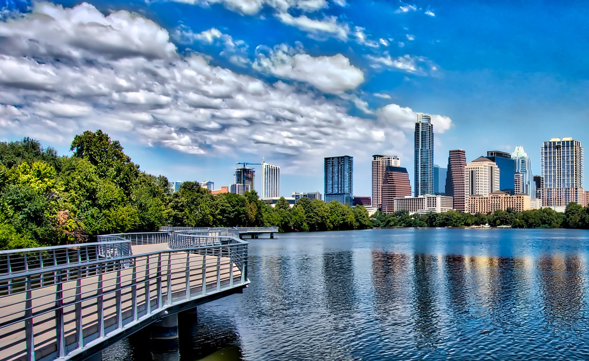

Hello World!
I live just outside Austin, TX.

Visit Austin
Six Places to Visit in Austin
- State Capitol
- Bat Bridge
- Zilker Metropolitan Park
- South Congress District
- Lady Bird Lake hike-and-bike trail
- Barton Springs Pool
Five facts about Austin
- Austin is the capital of Texas
- It is the home of the University of Texas
- Population: 950,000
- It is the fourth largest city in Texas by population
- It has experienced a 30 percent growth rate since 2010